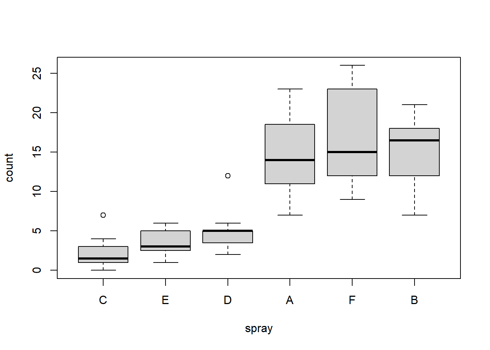

Chapter 8 Data handling
8.1 Atomic vectors
8.1.1 Basic operations
| Arithmetic | Comparison | Logical | |||
|---|---|---|---|---|---|
+ |
Addition | < |
less than | !x |
logical NOT |
- |
Subtraction | > |
greater than | x & y |
logical AND (vectorized) |
* |
Multiplication | <= |
less or equal | x && y |
logical AND (single value) |
/ |
Division | >= |
greater or equal | x | y |
logical OR (vectorized) |
^ |
Power of | == |
equal | x || y |
logical OR (single value) |
%% |
Modulo | != |
unequal | xor(x,y) |
logical exclusive OR |
%/% |
Integer division |
Order in which they are executed is defined in ?Syntax
8.1.2 Factors
Also see chapter 2.4
levels()print or overwrite labels of factor levelsrelevel()The levels of a factor are re-ordered so that the level specified byrefis first and the others are moved down.reorder()Reorder the factor levels according to another variable
# Make level B the first level (reference value)
InsectSprays$spray <- relevel(InsectSprays$spray, ref = "B")
# Reorder levels of spray by median of count (first class should have lowest count median)
InsectSprays$spray <- reorder(InsectSprays$spray, InsectSprays$count, FUN = median)
boxplot(count ~ spray, data = InsectSprays)
forcats package
fct_reorder()Reorder the factor levels according to another variablefct_reorder2()Reorder the factors according to last value of x axisfct_inorder()Reorder factors levels by first appearance or frequencyfct_relevel()Set a certain level first or last (or at certain position)fct_infreq()Reorder levels by the frequency in which they appear in the data (highest frequency first)fct_rev()Reverse order of factor levelsfct_lump()Combine some factor levels to new factor level
8.1.3 Date Time
R has 3 formates to store Date-Time
POSIXctseconds since UNIX epoch 01.01.1970 00:00:00POSIXltlist with year, month, day, …DateString in form “YYYY-MM-DD”
Some formats are better suited for specific objectives. E.g. ggplot2 can only work with POSIXct not POSIXlt.
Transform between string and Date-Time format

- From string to Date-Time
- string -> POSIXlt
strptime()(means string parser time, i.e. parses a string to a date-time or date)as.POSIXlt()
- string -> POSIXct
as.POSIXct()
- string -> Date
as.Date()
- string -> POSIXlt
- From POSIXt to character
strftime()(means string formatter time, i.e. formats a time to a string)format()as.character()
now <- Sys.time()
snow <- strftime(now, format = "%d.%m.%Y")
### from POSIXxt -> character
# format() (methods format.POSIXlt and format.POSIXct)
# as.character()
# strftime()
strftime(now, format = "%d.%m.%Y")
format(now, format = "%d.%m.%Y")
as.character(now, format = "%d.%m.%Y")
### character -> POSIXlt
# strptime()
(x <- strptime(snow, format = "%d.%m.%Y"))
class(x)
(x <- as.POSIXlt(snow, format = "%d.%m.%Y"))
class(x)
### character -> POSIXct
# as.POSIXct()
(x <- as.POSIXct(snow, format = "%d.%m.%Y"))
class(x)| Meaning | Meaning | ||
|---|---|---|---|
%Y |
Year (2004) | %y |
Year (04) |
%m |
Month (01-12) | %B |
Month (May) |
%d |
Day (01-31) | %H |
Hours (00-23) |
%M |
Minute (00-59) | %S |
Second (00-61) |
%j |
DOY (001-366) | %V |
WOY (00-53) |
%F |
YYYY-MM-DD | %T |
HH:MM:SS |
All conversion specification can be found here

8.1.4 Strings
| Function | Action |
|---|---|
nchar(x) |
Number of letters |
gsub('Peter', 'Pete', x) |
Replaces all Peter with Pete |
sub('Peter', 'Pete', x) |
Replaces first Peter with Pete |
grep('Pete', x) |
Which entry in a vector contain ‘Pete’ (returns rownumber) |
strsplit(x, '_') |
Splits strings at ’_’ and makes list out of them |
substr(x, 1, 1) |
Extract or replace substrings in a character vector (from start to stop, here: first letter) |
match() |
Returns a vector of the positions of (first) matches |
%in% |
Similar to match, returns a logical vector |
toupper(x) |
Makes all letters uppercase |
tolower(x) |
Makes all letters lowercase |
8.2 Lists
split()split vector into list separated by factorunlist()unite list into one vector
8.2.1 Apply familiy
apply(x, c(1,2), FUN) # apply function on one or several dimension of array
# 1: row, 2: col, c(1,2) both, 3: third dim in array
lapply(x, FUN, …) # apply on list, return list
sapply(x, FUN) # apply on list, return simplified list (array, matrix, vector)
tapply(x, factor, FUN) # apply function separately for different factor levels
mapply(FUN, ...) # apply function to multiple vectors
# e.g. apply function on each row of data.frame
# mapply(testFun, df$x, df$z)
by(x, index, FUN, …) # x can be whole data.frame
outer() # get a matrix based on a function with two parameters8.2.2 Long and wide format
reshape()
long <- Indometh #Data
wide <- reshape(Indometh, v.names = "conc", idvar = "Subject",
timevar = "time", direction = "wide")
long <- reshape(wide, v.names = "conc", idvar = "Subject",
timevar = "time", direction = "long")
head(long)## Subject time conc
## 1.0.25 1 0.25 1.50
## 2.0.25 2 0.25 2.03
## 3.0.25 3 0.25 2.72
## 4.0.25 4 0.25 1.85
## 5.0.25 5 0.25 2.05
## 6.0.25 6 0.25 2.31head(wide)## Subject conc.0.25 conc.0.5 conc.0.75 conc.1 conc.1.25 conc.2 conc.3 conc.4
## 1 1 1.50 0.94 0.78 0.48 0.37 0.19 0.12 0.11
## 12 2 2.03 1.63 0.71 0.70 0.64 0.36 0.32 0.20
## 23 3 2.72 1.49 1.16 0.80 0.80 0.39 0.22 0.12
## 34 4 1.85 1.39 1.02 0.89 0.59 0.40 0.16 0.11
## 45 5 2.05 1.04 0.81 0.39 0.30 0.23 0.13 0.11
## 56 6 2.31 1.44 1.03 0.84 0.64 0.42 0.24 0.17
## conc.5 conc.6 conc.8
## 1 0.08 0.07 0.05
## 12 0.25 0.12 0.08
## 23 0.11 0.08 0.08
## 34 0.10 0.07 0.07
## 45 0.08 0.10 0.06
## 56 0.13 0.10 0.098.2.3 Aggregate
myData <- aggregate(# 1) Object to aggregate
mtcars$mpg,
# 2) Factors for bilding subgroups
by = list(cyl = mtcars$cyl, gears = mtcars$gear),
# 3) Functions of aggregation
FUN = function(x) c(mean = mean(x), sd = sd(x),
n = length(x)))
myData <- do.call(data.frame, myData) #reshape output to data frame
## Also possible to aggregate several variables at once
aggregate(cbind(var1, var2, var3) ~ grouping1 + grouping2,
data = x,
FUN = function(x) c(mean = mean(x), var = var(x), n = length(x)))8.2.4 SQL joins


# Inner join:
merge(x = df1, y = df2, by = "CustomerId")
# Outer join:
merge(x = df1, y = df2, by = "CustomerId", all = TRUE)
# Left outer:
merge(x = df1, y = df2, by = "CustomerId", all.x = TRUE)
# Right outer:
merge(x = df1, y = df2, by = "CustomerId", all.y = TRUE)
# Cross join:
merge(x = df1, y = df2, by = NULL)More explanations here
dplyr joins
See here
dplyr::inner_join()
dplyr::left_join()
dplyr::right_join()
dplyr::full_join()
dplyr::semi_join()
dplyr::nest_join()
dplyr::anti_join()

8.4 Basic functions
filter()select rowsarrange()sort rows (in combination withdesc())select()select columnsmutate()create new columnsummarise()aggregategroup_by()group
8.5 Add ons
slice()select rows based on locationslice_head()slice_tail()
rename()change name of columnrelocate()change order of columns
8.6 tidyselect
See ?select
- Basic
:,!,&,|,c()
- Helper
everything()last_col()
- Pattern matching
starts_with()ends_with()contains()contain a literal stringmatches()matches a regular expressionnum_range()matches a numerical range like x01, x02, x03.
- Character vector
all_of()error if one is not foundany_of()no error- Help manual
- Based on arbitrary function
where()
8.7 Additinally useful
accross()apply the same transformation to multiple columnnest()case_when()as an alternative toifelse()